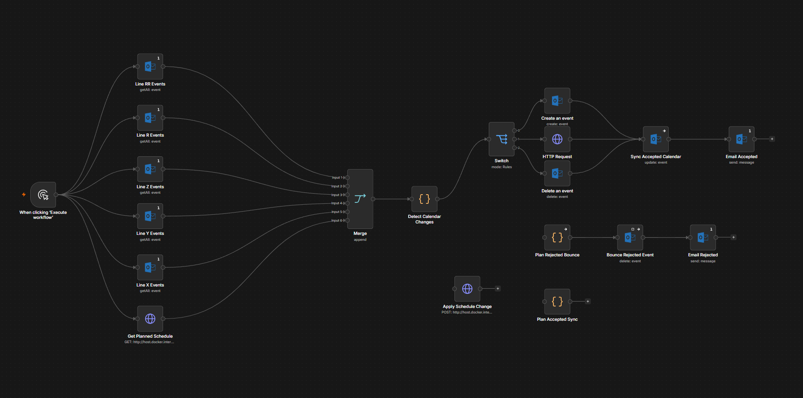
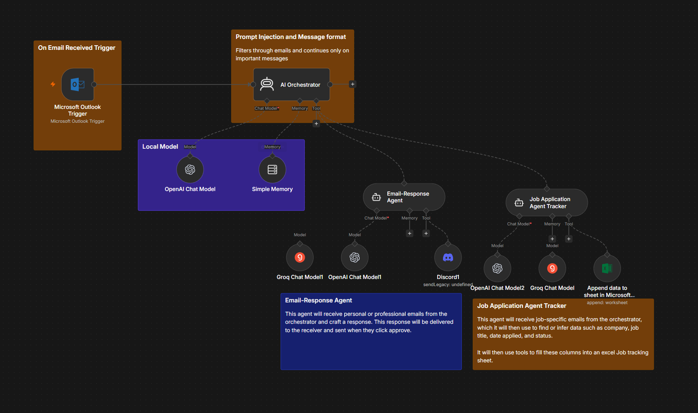
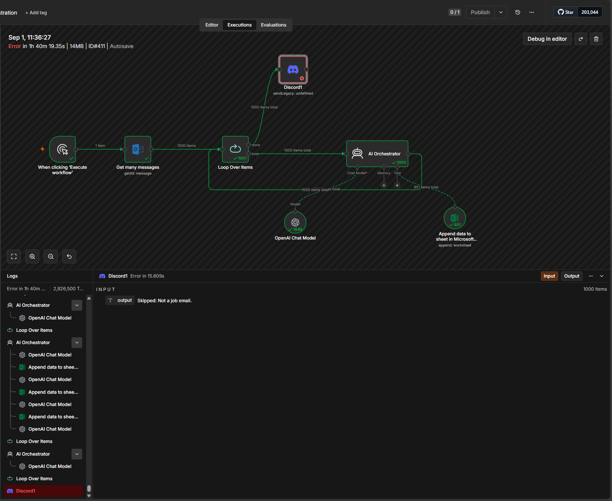
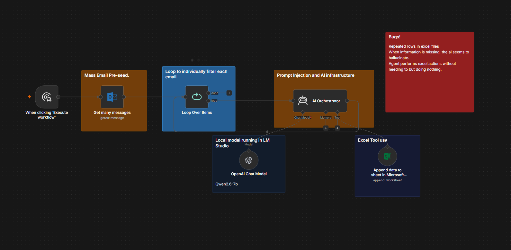

Five builds, across plant automation, agent orchestration, applied ML and hardware. The diagrams that move are running live in your browser — the swarm is really planning, the chess position is the one that actually keeps costing games. The screenshots are real captures from the systems themselves, failing nodes and all.
Plant operations,
automated
A 24/7 plastic-film plant runs five lines, four crews on a twelve-hour rotation, and six weeks of stacked orders. The information that keeps it moving lives in people's heads at shift change. This is an automation layer that reads the same database from four different angles — a scheduled briefing, a threshold forecast, a calendar event, and an approval chain that pauses on humans — and hands each role the one thing it needs. Pick a trigger and watch the run.
Run log
Dataset
Swipe the schematic sideways to follow the whole run
Reading the diagram. Orange dots are the payload moving between nodes. A yellow ring means the workflow has parked and is waiting on a person — the approval chain spends most of its life there. Dashed red is the rejection branch: an invalid calendar move bounces back with the reason attached instead of silently corrupting the schedule.

Watch it run
factory.db, the
five line calendars are pulled and merged, the affected events are corrected in
Outlook, and the manager gets a mail that names every change — action, order, line,
why, new start and end — closing with “database is the source of truth; the
calendar was corrected to match.” The reject branch is unlinked in this run; this
is the successful merge only.
1440 × 726 · silent
Rules reason,
the model explains
Every decision is deterministic and constraint-checked, because it has to be auditable. The LLM only turns the finished decision into a sentence a manager can read at 6am. It never writes to the schedule.
Four triggers,
one schema
Cron, threshold, webhook, and human gate all sit on the same sixteen-table SQLite database. Separate pipelines, shared data model — they meet at one seam, where an approved order enters the production queue.
Not an optimizer,
on purpose
Job-shop scheduling is NP-hard, so rescheduling is a transparent greedy heuristic with a human approval gate rather than a black box. A manager can read why an order moved and say no.
Edge cases,
baked in
The dataset ships with the failures on purpose: a line running behind its own clock, a PET shortfall against a 14-day lead time, an order stuck at chemical, and a cancellation that leaves a reclaimable gap.
† Power BI · offline The reporting layer ran on a university licence tied to my student account, which lapsed when I graduated. The workflows and the database are unaffected — the dashboards are the one piece I can't currently demo, and they go back up as soon as I'm on a licence again.
Three agents,
one real inbox
Every message that lands in my Outlook goes to an orchestrator running on a 7B model on my own machine. It classifies first and acts second: marketing and noise are dropped, and what survives is handed to a specialist. One drafts a reply and parks it in Discord until I approve it. The other pulls company, role, status and date out of job mail and appends a row to a tracking sheet. Nothing sends and nothing is written without passing a gate. This one runs against my actual job search.

Watch it run
Evidence from the runs


Why the failure list is on the page. A screenshot of a workflow that works proves very little. The interesting artefacts are the thousand-item execution and the three failure modes written next to it — a 7B model asked to extract structured fields will invent them when the source is silent, and the fix is tighter schema constraints and a null path, not a better prompt.
Classify first,
act second
The orchestrator's only job is deciding what a message is. Spam, marketing and anything unrelated get dropped before a specialist agent is ever invoked, which keeps tool calls and tokens off the majority of the inbox.
Nothing sends
itself
The reply agent drafts, then stops. The draft goes to Discord and waits for a human approve before it reaches anyone. Same principle as the plant-floor approval chain: the model proposes, a person commits.
Runs on my
own hardware
Qwen2.5-7B served by LM Studio on an OpenAI-compatible endpoint at localhost. No per-token bill on a thousand-message run, and a personal inbox never leaves the machine.
Free text into
a schema
Company, role, status, date applied, recruiter, next steps, requisition number — pulled from prose written by a hundred different sender templates, normalised against a fixed status lifecycle, and appended as a row.
The engine finds it.
The model explains it.
Stockfish will tell you a move cost you 1.7 pawns. That is useless if you don't know why. Chess Coach AI imports a player's history from chess.com, runs every move through the engine, aggregates the losses into patterns, and then hands the structured result to a local model with one instruction: explain this in chess, not in centipawns, and invent nothing. Step through a real loss below.
What you are looking at. The board is shown from Black's side, because Black is the student. The bar on the left is the engine's evaluation — Black's share shrinks as the position collapses. The chips underneath light up when the coach calls that tool: the model can replay a line in a sandbox before it commits to an explanation, so it isn't guessing at what a move does.
Ingest ·
analyze · aggregate
Games come in from the chess.com API, get parsed from PGN, and every ply is scored by Stockfish. Centipawn loss is classified by phase, and the per-game noise rolls up into the openings and mistake patterns that repeat.
Schema-forced
output
The report is a Pydantic model the LLM has to fill: headline, strengths, weaknesses, opening insights, recurring patterns, focus areas. Constraining the shape is what keeps the advice tied to the data instead of drifting into generic chess wisdom.
A sandbox
it can poke
The chat runs against a live board sandbox: show a position, list the worst mistakes, ask the engine for its top moves, try a candidate move, walk a whole line. The model checks before it explains.
Runs on
your machine
Local model through Ollama and a bundled Stockfish binary, so a full review costs nothing per game and no game history leaves the box. FastAPI serves it; a React front end does the board review.
Eight drones,
one corridor
Put two groups of UAVs on opposite sides of a wall with three gaps and tell them to swap. Global A* gets each one a route; local reciprocal velocity obstacle avoidance keeps them from meeting in the doorway. A separate collision checker audits every frame and never steers — it is the referee, not the controller, so a violation is a real failure rather than something the planner can paper over. This is the planning stack from the Isaac Sim project, running here in 2D.
Telemetry
Goals reached
Legend
Try the antipodal circle. Every agent's straight-line path runs through the same point at the centre. Without reciprocal avoidance the whole group piles up at the origin; with it, they rotate around each other and clear. That failure mode is exactly why the local planner exists, and it is the reason a global planner alone is not enough.
MAPPO with a
central critic
The learned policy is a parameter-shared Gaussian actor over local observations, trained against a critic that sees every agent. Centralized training, decentralized execution — the critic is thrown away at deployment, so each drone flies on its own view with no comms.
Backends
swap cleanly
The planner is pure NumPy and knows nothing about its host. Isaac Sim and a headless runner sit behind one bridge; the CPU checker and the FPGA client sit behind another. Same sim, different backend, comparable numbers.
Built to
force conflict
Corridor swap creates guaranteed contention at three choke points. Antipodal circle is the classic RVO stress test. Warehouse is randomised shelving. Each one breaks a different assumption.
Zero is the
only passing score
Every run logs collisions, minimum pairwise separation, makespan, and check throughput. A demo-quality run has zero collisions; anything else is a bug, not a tuning problem.
Collision checking,
pushed to hardware
Collision checking is the part of multi-agent planning that grows fastest: pairwise tests scale with the square of the fleet. So it comes off the host. Agent states stream to an FPGA over UART, a five-stage fixed-point datapath retires one pair per clock, and a collision bitmap comes back for the planner to gate its trajectory candidates against.
Five stages, Q16.16, no square roots
Coordinates are signed 32-bit fixed point — ±32,768 m at ~15 µm resolution, far more than a warehouse or a canyon needs. The sphere test never takes a root: it compares dx² + dy² + dz² against (rᵢ + rⱼ)², which keeps the whole thing to adds and multiplies and lets the pipeline stay full.
5 PAIRS IN FLIGHT · 1 RESULT PER CYCLE · UART 921600 8N1
Checks per frame
Pairwise plus obstacle tests, at 60 Hz. The host benchmark runs the identical simulation against both backends and reports checks per second for each, so the comparison is real rather than asserted.
A parser
on the wire
A command FSM behind the UART receiver decodes agent-state and obstacle writes into a 16-entry register file and an AABB memory, then kicks the pair scheduler. Framing and back-pressure are part of the design, not an afterthought.
One interface,
two implementations
The FPGA client and the NumPy checker expose the same function to the planner. That is the whole reason the benchmark means anything — the simulation cannot tell which one it is talking to.
Testbenches
before boards
RTL modules are exercised in simulation against the NumPy reference before anything is synthesised, so a mismatch shows up as a failing vector rather than a drone flying through a shelf.
Fixed point is
a design decision
Floating point would cost area and add latency for range nobody needs. Choosing Q16.16 and proving the 66-bit intermediate width is the interesting part of the problem.